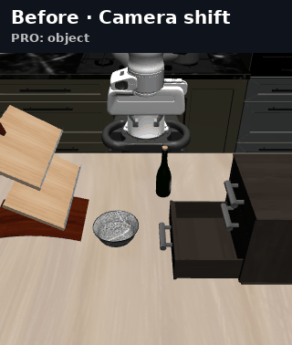
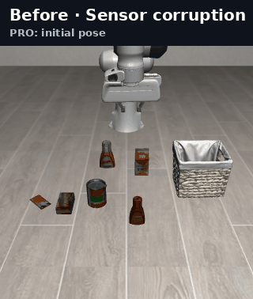
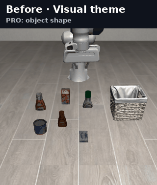
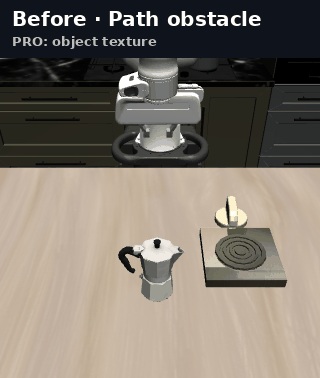

STATIC ROBUSTNESS
The shift is visible before action begins.
shift→observe→act
LIBERO-Plus and LIBERO-PRO test generalization from a shifted reset.
LIBERO-MAX · DYNAMIC ROBUSTNESS
LIBERO-MAX changes the environment after a robot has already begun acting. Every Dynamic rollout is matched to a Base control with the same task, reset, policy seed, and executed prefix. Base continues without an added event; Dynamic receives one change that persists for the rest of the rollout.

the evaluation gap
Base and Dynamic share the same executed prefix, isolating the outcome effect of adding one event.
STATIC ROBUSTNESS
LIBERO-Plus and LIBERO-PRO test generalization from a shifted reset.
DYNAMIC ROBUSTNESS
LIBERO-MAX measures whether task success is preserved after the event. It does not infer internal detection or deliberate replanning.
the frozen main track
1,000 matched cases per event type

The manipulated object moves after approach.

The destination moves during the approach.

The viewpoint changes while the robot is acting.

Noise and occlusion begin after execution starts.

Scene lighting changes abruptly.

The scene appearance changes online.

Five irrelevant objects enter the active support.

A new obstacle blocks the approach region.
benchmark construction
LIBERO-MAX keeps the task substrate fixed, preserves the executed action prefix, and introduces one controlled change after the robot begins acting.

8,000 source cases become 8,000 matched dynamic evaluations. The frozen track combines 5,600 Plus-derived and 2,400 PRO-derived cases, then applies one controlled event during policy execution.
main results
Fourteen policies are evaluated on the same 8,000 Base/Dynamic pairs, using each policy's released inference settings.
of Base successes become failures after the event.
Across all assigned cases, every policy loses success, with an 11.0–25.7 percentage-point Base-to-Dynamic drop.
The matched comparison holds the task, initial state, policy seed, and executed prefix fixed within each pair. Every policy's paired 95% bootstrap interval for Dynamic minus Base success lies below zero.


where policies fail
Geometry and observation changes generally cause larger losses than appearance, clutter, and path changes. Sensitivity also varies across policies, motivating evaluation by event rather than a single model-family ranking.

viewpoint and execution history
On the same 1,000 camera cases per policy (700 Plus-derived and 300 PRO-derived), we compare no added change (Base), the camera change before the first input (Reset), and the same change during execution (Mid-task). The three-policy control contains 9,000 complete rollouts.
| Policy | Base | Reset | Mid-task |
|---|---|---|---|
| X-VLA | 68.2[65.4, 71.0] | 1.3[0.6, 2.0] | 12.4[10.4, 14.5] |
| π0.5 | 79.5[77.1, 81.9] | 51.3[48.2, 54.4] | 55.3[52.2, 58.4] |
| HiMem-WAM | 72.5[69.7, 75.2] | 68.8[65.9, 71.6] | 72.6[69.8, 75.3] |
Italic values are 95% source-stratified bootstrap intervals. This camera diagnostic uses π0.5 with H = 10 and Q = 5; its primary benchmark setting uses H = 50.

Trajectory analysis reveals failures hidden by aggregate rates: 84 model–case instances succeed in both Base and Reset but fail in Mid-task. All reach a new policy query, and 13 execute no stale actions after the event.

feedback timing
Changing the number of actions executed per policy query changes performance, but the best cadence depends on the policy. Across all 18 valid settings, Dynamic remains 11.1–23.0 percentage points below Base.

a targeted response
A simple image-restoration module improves X-VLA on 300 fixed sensor-noise cases without retraining. The quality gate uses only current images to trigger inpainting and denoising, with no event flag or clean reference image.
| Processing | Base | Dynamic | Gain (pp) |
|---|---|---|---|
| Native | 66.7 | 40.7 | — |
| Always-on | 68.3 | 47.3 | +6.7[2.3, 11.0] |
| Quality-gated | 67.0 | 47.7 | +7.0[3.0, 11.3] |
Italic values are paired 95% bootstrap intervals for Dynamic gains. Each strategy uses 300 Base/Dynamic pairs, totaling 1,800 rollouts. All assigned cases remain in the denominator.
Quality-gated restoration narrows the Base/Dynamic gap by 6.7 points (95% CI: [2.3, 11.3]), with a 0.3-point Base change. Always-on restoration also helps; the gated-versus-always Dynamic difference is not statistically resolved. A 19.3-point gap remains.
Explore source-category results, coverage diagnostics, and the rapid evaluation track. Every figure opens at full size.
The 5,600 Plus-derived and 2,400 PRO-derived cases expose different source difficulties. These descriptive slices retain the source categories and paired event outcomes.


Coverage distinguishes whether a rollout reaches the event and receives a subsequent policy query. Cases that miss either remain in the headline score with their observed task outcome.

Lite contains 800 pairs selected independently of policy outcomes, preserving Max’s event and source proportions. It requires 1,600 rollouts per policy.

open benchmark
The frozen manifest, source revisions, validation, evaluation launchers, and automated tests are released with the benchmark.
$ git clone https://github.com/liberomax/LIBERO-MAX.git
$ cd LIBERO-MAX
$ python3 -m venv .venv
$ source .venv/bin/activate
$ pip install -e .
$ make validatecitation
This temporary entry identifies the repository and dataset release. We will replace it with the verified paper BibTeX when the manuscript is public.
@misc{liberomax,
author = {
Yunbei Zhang and
Zijian Jin and
Yuanzhe Liu and
Janet Wang and
Xilun Zhang and
Yuyou Zhang and
Zhenyu Zhang and
Daoan Zhang and
Shuaicheng Niu and
Gen Li and
Jianfei Yang and
Jihun Hamm and
Ismini Lourentzou and
Weirui Ye and
Bo Liu and
Peter Stone and
Marco Pavone
},
title = {LIBERO-MAX: Do Robot Policies Adapt When the World Changes?},
howpublished = {\url{https://github.com/liberomax/LIBERO-MAX}},
note = {Dataset. Paper forthcoming.}
}